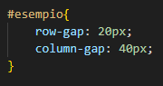

8
Per concludere voglio spiegare la proprità "Gap".
Gap permette di dare una spaziatura agli elementi, senza considerare i bordi esterni.
Inoltre possiamo pure dire che il suo funzionamento è basato su un sistema a tabella.
Esempio:
Qui abbiamo impostato un parametro di lunghezza di 20 pixel, gli elementi di conseguenza sono stati spaziati fra di loro, ma senza considerare i bordi.
Nella proprietà gap possiamo inserire un ulteriore parametro, che indicherà il cosìdetto "row-gap"
Esempio:
Come abbiamo notato inserendo due parametri, il primo verrà preso come input di "row-gap", ovvero la spaziatura che abbiamo tra una riga e l'altra.
Mentre il secondo verrà preso come "column-gap",(il parametro specificato inzialmente, nel primo esempio) ovvero la distanza che abbiamo tra una colonna di elementi e l'altra.
Esempio:
Lembo Samuele
8